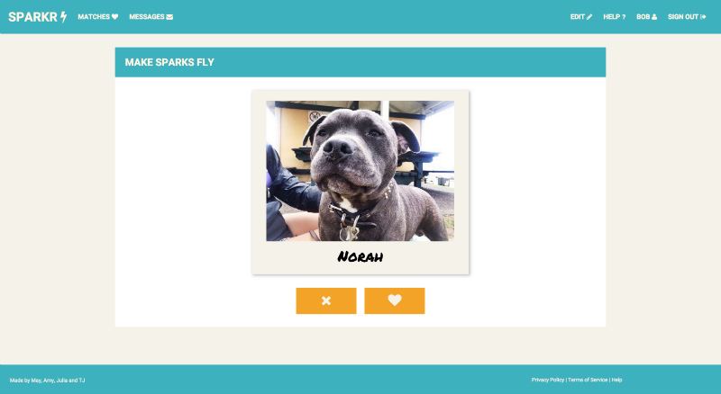
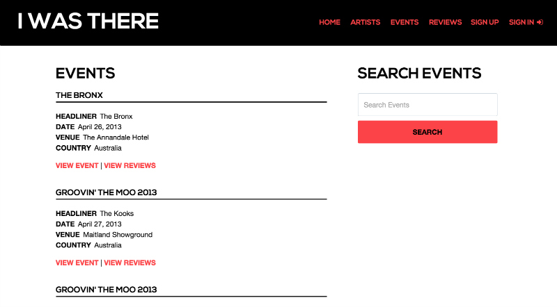
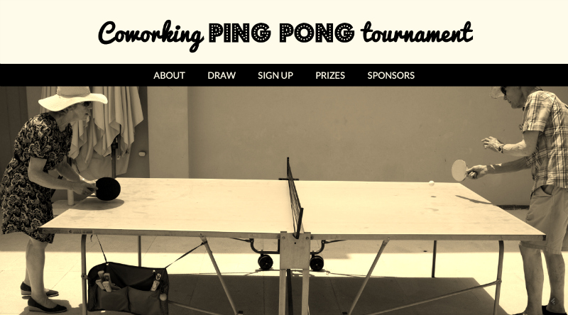
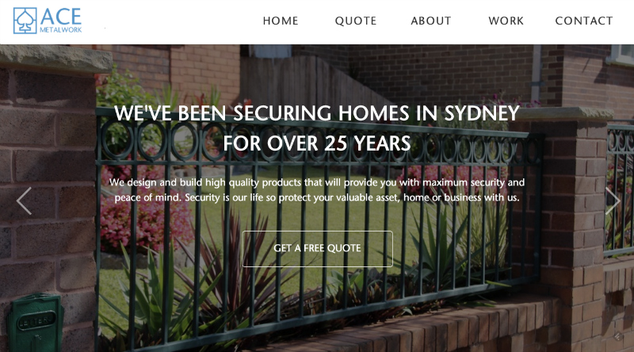
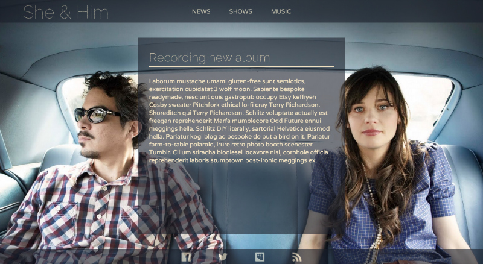

About
Hey there! I’m Julia Ryan.
I’m a Full-Stack Developer with a fondness for the Front-End. I’m naturally inquisitive and get a kick out of figuring out how things work. I have an eye for detail so I'll spot that missing parenthesis! I'm interested in visual design and making websites that are usable and accessible to all. I’m looking to work with a creative and collaborative team to make beautiful, meaningful and functional web applications.
When I'm not coding or reading about code, I'm enjoying spending time with my family and friends, finding good coffee, listening to music, going to gigs and exhibitions.. and spending a bit too much time playing Civilization.
I completed General Assembly's Front-End Web Development course in March 2014 I completed General Assembly's Web Development Immersive course in April 2015Projects
Historia
I designed and developed Historia for my final project during the Web Development Immersive course at General Assembly, Sydney.
Historia is a rails app that allows people to discover places around the world that they may not have known even existed. They can also find out about the history of the place through information pulled from Wikipedia using Wikipedia's API and see where the place is located using Google Maps API. People can sign up for an account to favourite or share a place.
I also built a Chrome Extension which is not yet ready to download. The Chrome Extension overrides the default new tab and displays an image of a new place each time a new tab is opened.
historia-app.herokuapp.comSparkr
I worked with three classmates to design and develope Sparkr for our second project during the Web Development Immersive course at General Assembly, Sydney.
Sparkr is a dating service primarily for people over the age of 50 however open to anyone over 18. People need to like a person's three moments and vice versa for a match to occur. A person's three moments are to show aspect's of the person's life - what they like and care about. Sparkr provides a place where they can start once there is a match.
make-sparks-fly.herokuapp.comI was there
I designed and developed 'I was there' for my first project during the Web Development Immersive course at General Assembly, Sydney.
Using Last.FM's API, people can search for artists to add or read reviews of the artist's show.
i-was-there-app.herokuapp.comCoworking Ping Pong Competition
For my major assignment in the Front-End Web Development course I designed and developed a website for a Ping Pong competition to be used by startups in Sydney.
ping-pong.com.auAce Metalwork
After the course I gained my first client. I designed and developed a simple one page website to be used for a local Sydney business.
acemetalwork.comBand website project
I designed and developed a website for the band She & Him as part of the Front-End Web Development course I completed at General Assembly.